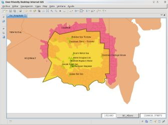
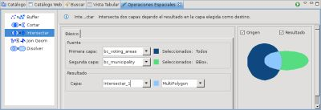
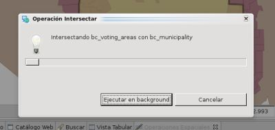
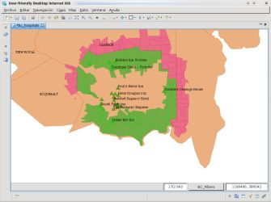

Calcula la intersección geométrica entre dos capas
La Operación Intersección toma los features de dos Capas Fuente de tipo vector y calcula la intersección entre sus geometrías de feature, almacenando el resultado en una Capa Resultado.
Si la Capa Resultado tiene seleccionado algún feature, la operación se llevará a cabo contra ellos, de lo contrario, se utilizarán los Features de toda la Capa.
Las Capas Fuente no son modificadas bajo ningún concepto. Se crea una nueva Capa Resultante por defecto, o el usuario puede especificar una Capa editable de tipo vector donde almacenar los resultados.
La Operación Intersección trabaja sobre los features seleccionados de las capas deseadas, o sobre la totalidad de las capas si no se establece una selección.
En este ejemplo, comenzaremos seleccionando un único Feature de una de las capas de interés, como se muestra en la Figura 1.

Figura 1. Limitar el ámbito de la operación mediante una selección
Ir a la Vista de Operaciones Espaciales y seleccionar Intersectar de la lista de Operaciones.
Se mostrarán las opciones de entrada específicas de la Operación Intersección (Figura 2).

Figura 2. controles de la Operación Intersectar

Figura 3. Diálogo de Progreso
Una vez que termina la Operación, si una nueva Capa ha sido creada para albergar el resultado, será añadida automáticamente al Mapa actual.
La Figura 4 muestra la Capa recién creada (Intersect-1, en verde) añadida al Mapa, con el feature que intersecta las Capas Municipality y Voting Areas.

Figura 4. Resultado de la Operación
{kind=link}
{kind=link}
{kind=link}
{kind=link}